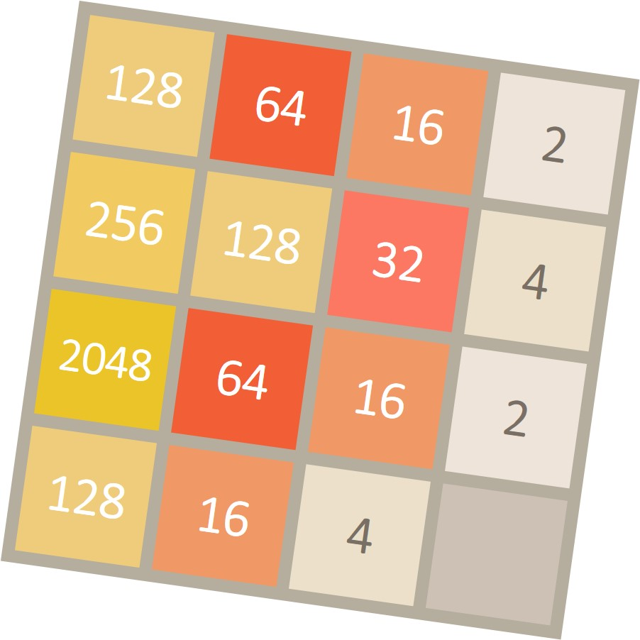

In this project, you will design agents for the 2048 game. Along the way, you will implement both minimax and expectimax search and try your hand at evaluation function design.
The code for this project contains the following files, available as a zip archive
.multi_agents.py |
Where all of your multi-agent search agents will reside. |
2048.py
| The main file that runs the 2048 games. |
game_state.py
| This file describes a 2048 GameState type, which you will use extensively in this project. |
game.py |
The logic behind how the 2048 game works. This file describes several supporting types like Agent, OpponentAction, and Action. |
util.py |
Useful data structures for implementing search algorithms. |
graphics_display.py |
Graphics for 2048. |
game_grid.py |
Support for games graphics. |
game2048_grid.py |
Support for 2048 graphics. |
displays.py |
Summary graphics for 2048. |
keyboard_agents.py |
Keyboard interfaces to control 2048. |
What to submit: You will fill in portions of multi_agents.py during the assignment. You should submit this file (only) and a README.txt (case sensitive) as a zip file named
id1_id2.zip (or id1.zip) in the moodle website. Each team should submit exactly one file!
Evaluation: Your code will be autograded for technical correctness. Please do not change the names of any provided functions or classes within the code, or you will wreak havoc on the autograder. Please make sure you follow the readme format exactly.
Academic Dishonesty: We will be checking your code against other submissions in the class for logical redundancy. If you copy someone else's code and submit it with minor changes, we will know. These cheat detectors are quite hard to fool, so please don't try. We trust you all to submit your own work only; please don't let us down. If you do, we will pursue the strongest consequences available to us.
Getting Help: You are probably not alone. Please post your questions via the Project 2 Forum on the course website. Please do not write to our personal e-mail addresses!
Readme format: Please submit a README.txt file. The README should include the following lines (exactly):
First, sit back relax and play a nice game of 2048:
python3 2048.py
Now, run the provided ReflexAgent in multi_agents.py:
python3 2048.py --agent=ReflexAgent
Note that it does not play that well. Inspect its code (in multi_agents.py) and make sure you understand what it's doing.
Question 1 (3 points) Improve the evaluation_function in ReflexAgent. The provided reflex agent code provides some helpful examples of methods that query the
GameState for information.
python3 2048.py --agent=ReflexAgent --num_of_games=10 --display=SummaryDisplayHow does your agent fare? It will likely to achieve 512 sometime, and 256 most of the times.
The autograder will check the performances of your agent performances on 20 games.
Don't spend too much time on this question, though, as the meat of the project lies ahead.
Question 2 (5 points) Now you will write an adversarial search agent in the provided MinimaxAgent class stub in multi_agents.py.
Your code should also expand the game tree to an arbitrary depth. Score the leaves of your minimax tree with the supplied self.evaluation_function, which defaults to score_evaluation_function.
MinimaxAgent extends MultiAgentAgent, which gives access to self.depth and self.evaluation_function. Make sure your minimax code makes reference to these two variables where appropriate as these
variables are populated in response to command line options.
Important: A single search ply is considered to be one agent move and the board response (addition of random tile), so depth 2 search will involve agent move two times.
Hints and Observations
self.evaluation_function). You shouldn't change this function, recognize that now we're evaluating *states* rather than actions, as we were for reflex agent. Look-ahead agents
evaluate future states whereas reflex agents evaluate actions from the current state.test_layout layout are 4, 12, 16 for depths 1, 2, and 3 respectively.
python3 2048.py --agent=MinmaxAgent --depth=1 --random_seed=1 --initial_board=test_layout.txt
GameStates, either passed in to get_action or generated via GameState.generate_successor. In this project, you will not be abstracting to simplified states.
python3 2048.py --agent=MinmaxAgent --depth=2
Question 3 (3 points) Make a new agent that uses alpha-beta pruning to more efficiently explore the minimax tree, in AlphaBetaAgent.
You should see a small speed-up. (but still depth=3 is too much for online playing in this game).
python3 2048.py --agent=AlphaBetaAgent --depth=2
The AlphaBetaAgent minimax values should be identical to the MinimaxAgent minimax values, although the actions it selects can vary because of different tie-breaking behavior. the minimax values of the initial state in the
test_layout layout are 4, 12, 16 for depths 1, 2, and 3 respectively.
Question 4 (3 points) Random board responses is, of course, not optimal minimax agents, and so modeling them with minimax search may not be appropriate. Fill in ExpectimaxAgent, where your agent will no
longer take the min over all board possible responses, but the expectation according to your agent's model of how the board acts. To simplify your code, assume the board response uniformly at random. (although that in the original rules their is
a higher probability for the 2 tile.)
You should now observe a more optimistic approach that ignore possible blocking. Investigate the results of these scenario:
python3 2048.py --agent=AlphaBetaAgent --depth=2 --initial_board=risk_layout.txt --num_of_initial_tiles=0
python3 2048.py --agent=ExpectimaxAgent --depth=2 --initial_board=risk_layout.txt --num_of_initial_tiles=0You should find that your
ExpectimaxAgent achieve 1024 about half the time, while your AlphaBetaAgent usually achieve just 512. Make sure you understand why the behavior here differs from the minimax case.
python3 2048.py --agent=AlphaBetaAgent --depth=2 --num_of_games=10 --display=SummaryDisplay
python3 2048.py --agent=ExpectimaxAgent --depth=2 --num_of_games=10 --display=SummaryDisplay
Question 5 (6 points) Write a better evaluation function for 2048 in the provided function
betterevaluation_function. The evaluation function should evaluate states. You may use any tools at your disposal for evaluation, including your search code from the last project. Grading: 3 point for any evaluation function that
when running with AlphaBetaAgent depth=2 most of times achieve score greater than 7000. The other 3 point will be awarded based on best score.
The top 40% submissions will receive full credit; the next 35% will get 2 points and the other submissions
will be awarded with one point.
python3 2048.py --agent=AlphaBetaAgent --depth=2 --evaluation_function=better --num_of_games=5
Document your evaluation function! Please describe your evaluation function at the README file. We're very curious about what great ideas you have, so don't be shy. We reserve the right to reward bonus points for clever solutions and show demonstrations in class.
Hints and Observations
Project 2 is done.